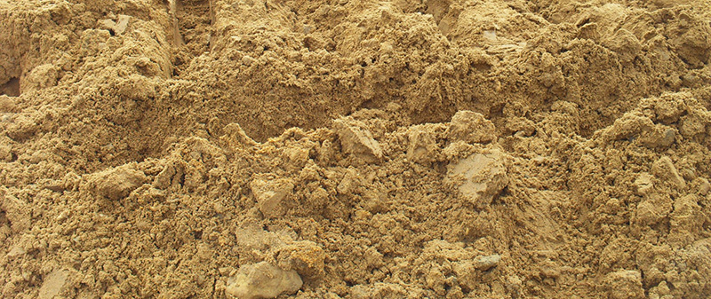

Супесь - это рыхлая песчано-глинистая осадочная горная порода, содержащая 3-10% (по массе) глинистых частиц (размер менее 0,005 мм). Различают грубо-, мелкопесчаные и пылеватые супеси в зависимости от содержания песчаных зёрен соответствующих размерностей и пылеватых частиц. Песчаные и пылеватые супеси содержат в значительном количестве кварц, в более глинистых супесях присутствуют глинистые минералы.